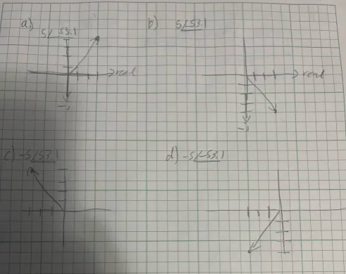

<!DOCTYPE html>
<html lang="en">
  <head>
    <meta charset="UTF-8" />
    <meta name="viewport" content="width=device-width, initial-scale=1.0" />
    <title>Lab Report - [Lab Name]</title>
    <style>
      body {
        font-family: Arial, sans-serif;
        line-height: 1.6;
        margin: 0;
        padding: 0;
        background: linear-gradient(45deg, #dd5522, #0056b3);
        color: #333;
      }

      nav {
        background: #fff;
        padding: 10px;
        box-shadow: 0 2px 5px rgba(0, 0, 0, 0.1);
        border-bottom: 2px solid #0056b3;
        position: fixed;
        top: 0;
        width: 100%;
        z-index: 1000;
      }

      nav a {
        color: #0056b3;
        text-decoration: none;
        padding: 10px 15px;
        font-weight: bold;
        transition: background 0.3s ease;
      }

      nav a:hover {
        background: #dd5522;
        color: #fff;
      }

      .dropdown {
        position: relative;
        display: inline-block;
      }

      .dropdown-content {
        display: none;
        position: absolute;
        background: #fff;
        box-shadow: 0 2px 5px rgba(0, 0, 0, 0.1);
        border-radius: 5px;
        min-width: 160px;
        z-index: 1000;
        top: 100%;
        left: 0;
      }

      .dropdown-content a {
        color: #0056b3;
        text-decoration: none;
        padding: 10px 15px;
        display: block;
        transition: background 0.3s ease;
      }

      .dropdown-content a:hover {
        background: #dd5522;
        color: #fff;
      }

      .dropdown:hover .dropdown-content {
        display: block;
      }

      .container {
        width: 80%;
        margin: 80px auto 20px;
        background: #edd5d5;
        padding: 20px;
        box-shadow: 0 0 10px rgba(0, 0, 0, 0.1);
        border-radius: 10px;
      }

      h1,
      h2 {
        color: #0056b3;
      }

      h1 {
        text-align: center;
      }

      h2 {
        border-bottom: 2px solid #0056b3;
        padding-bottom: 5px;
      }

      .section {
        margin-bottom: 20px;
      }

      .section p {
        margin: 0;
      }
      .rotated-image {
        transform: rotate(-90deg);
        width: 70%;
      }

      /* Responsive Image CSS */
      img {
        max-width: 100%;
        height: auto;
        display: block;
        margin: 20px auto; /* Adds spacing around the image */
        border: 2px solid #0056b3; /* Adds border to match your theme */
        box-shadow: 0 0 10px rgba(0, 0, 0, 0.1); /* Optional: adds shadow */
        border-radius: 10px; /* Optional: rounds the corners of the image */
      }
    </style>
  </head>
  <body>
    <nav>
      <a href="/index.html">Home</a>
      <div class="dropdown">
        <a href="#">Labs</a>
        <div class="dropdown-content">
          <a href="/Lab1/lab1.html">Lab1</a>
          <a href="/Lab2/lab2.html">Lab2</a>
          <a href="/Lab3/lab3.html">Lab3</a>
          <a href="/Lab4/lab4.html">Lab4</a>
          <a href="/Lab5/lab5.html">Lab5</a>
          <a href="/Lab6/lab6.html">Lab6</a>
          <a href="/Lab7/lab7.html">Lab7</a>
          <a href="/Lab8/lab8.html">Lab8</a>
          <a href="/Lab9/lab9.html">Lab9</a>
          <a href="/Lab10/lab10.html">Lab10</a>
          <a href="/Lab11/lab11.html">Lab11</a>
          <a href="/Lab12/lab12.html">Lab12</a>
        </div>
      </div>
    </nav>

    <div class="container">
      <h1>Lab Report - Lab 11: Complex Numbers TIMS</h1>

      <div class="section" id="introduction">
        <h2>Introduction</h2>
        <p>
          The objective of the lab is to utilize the TIMS unit to see how
          imaginary and real parts of functions look like graphically.
        </p>
      </div>

      <div class="section" id="procedures">
        <h2>Procedures</h2>
        <p>
          Pre-Lab Exercise:

          

          A.1.5) Sum = ARB1+ARB2 = 1 + j1 <br />

          <br />
          A.1.8) Change the ARB2 phase to -90◦, press “Load ARB”, and record the
          complex number for the summed value. Record the complex number in both
          rectangular and polar form.

          

          <br />
          A.2.3) Explain why the XY plot displays a circle.
          <br />The plot displays a circle because it is showing a sin wave and
          that sin wave is going ina circle when it comes to looking at the xy
          values

          <br />
          A.2.4) How does this correspond to what you see on the PicoScope?
          <br />When removing ARB1 form the scope the XY graph shows only the y
          direction change of the circle so it appears as a straight line
          through the y axis.

          <br />
          A.2.5) How does this correspond to what you see on the PicoScope?
          <br />When removing ARB2 from the scope it is the same as before but
          instead of the vertical component remaining only the horizontal
          component remains with no height.

          <br />
          A.2.6) Write the equation for signals at ARB1 and ARB2 as a function
          of time in the form: Acos(￿t + ￿) <br />ARB1: 1cos(t-15) <br />ARB2:
          1.2cos(t+75)

          <br />B.2) Create the functions described in B.1 and B.2. Include both
          Matlab “.m” files in your submission.
          <br />
          Shown in code section below.

          <br />C.4) Comparing the output sum signals from steps 3 and 4, are
          the results as expected? Explain. The sums are similar but not exactly
          the same as the TIMS machine won't make perfect waves and the matlab
          is run off of ideal conditions. Additonally, the MATLAB code does some
          rounding itself.

          <br />D.8) Record the ChB amplitude in Table 1. The first one is done
          for you.

          
        </p>
      </div>

      <div class="section" id="conclusion">
        <h2>Conclusion</h2>
        <p>
          <br />What did you enjoy about this lab?<br />
          I enojoyed using the TIMS machine for the last time
          <br />What didn’t go well in this lab?<br />
          Understanding what was really going on did not go well during lab but
          it made sense afterwards.
          <br />How would you improve the lab experiment for future classes?<br />
          I would improve this lab by replacing it with making matlab code
          instead. In person part felt pointless.
        </p>
      </div>
      <div>class="section" id="code"</div>
      <h2>Code</h2>
      <a href="/Lab11/main.m">main function Code</a> <br />
      <a href="/Lab11/pol2rec.m">polar to rectangular Code</a> <br />
      <a href="/Lab11/rec2pol.m">rectangular to polar Code</a> <br />
    </div>
  </body>
</html>
